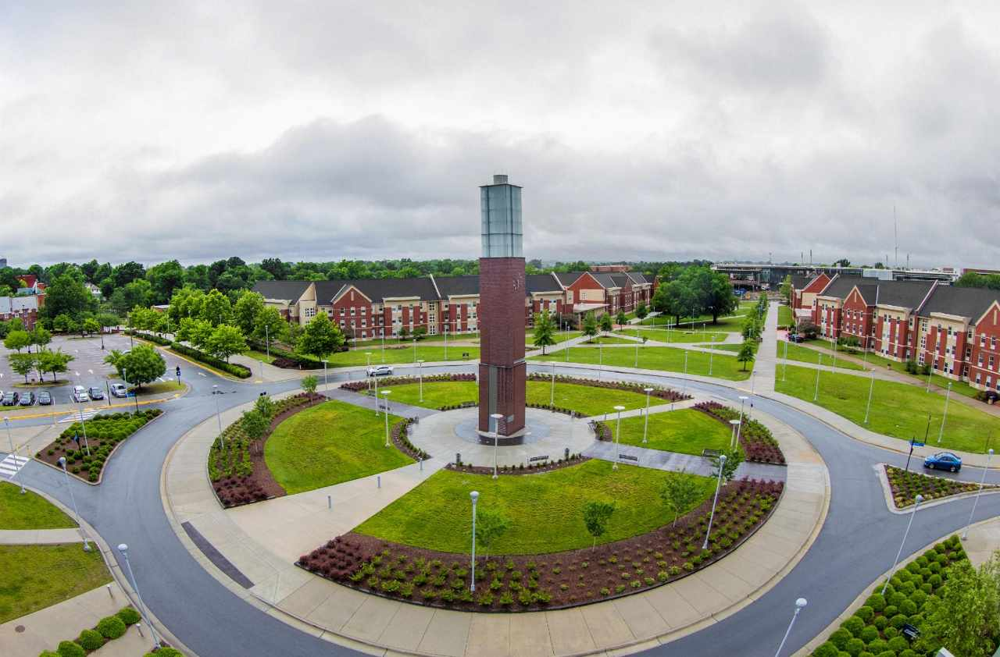
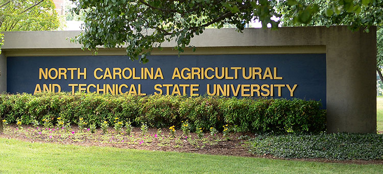
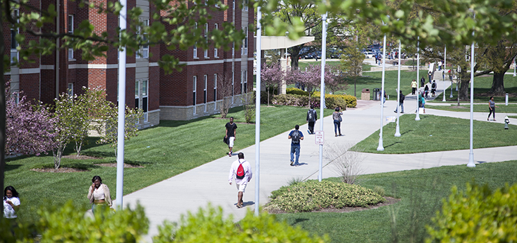

About Us
NCA&T Participation Portal is a portal for ALL Aggies Freshman to Amlumni and Staff to stay updated on all North Carolina Agricultrual And Technical State University's upcoming events. This Includes Homecoming, Pop Up Events, Celebrations, Campus News, and more encouraging campus awareness and participation.
|  |  |  |
Our Goals/Objectives
- Enhance Campus Engagement: Encourage a stronger sense of community by keeping all Aggies informed about events and activities.
- Promote Inclusivity: Ensure that ALL members of the NCA&T community feel apart of the family and informed!
- Streamline Communication: Provide a centralized platfrom for accessing event information and campus news.
- Foster Participation: Motivate students and staff to actively engage in events and celebrations at the University.
- Support Alumni Connections: Help Alumni stay connected with their Alma Mater through updates of these events as well.
- Facilitate Networking: Create Oppurtunities for students and some willing staff members to connect with eachother for future oppurtunites and build relationships.